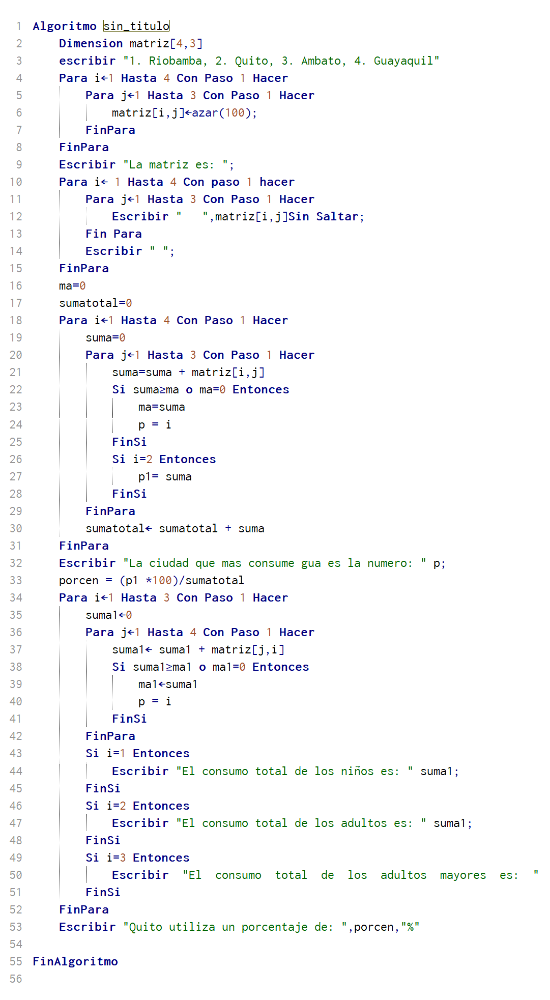

Ejemplo de vector
Algoritmo que permita recopilar los nombres de 5 empleados, el sueldo de cada uno en arreglos para cada uno. Si el sueldo es mayor de 2400 de pesos tendrá un ishh (servicio del apoyo del hogar) de 24 de lo contrario 0.035 por el sueldo. Calcular el total a pagar (sueldo - ishh) para cada uno
Algoritmo con vectores

Ejemplo de matriz
Se hizo un censo demográfico en (Riobamba, Quito, Ambato y Guayaquil) a niños, adultos y adultos mayores sobre el consumo de agua. Llenar la matriz de consumo y realizar las siguientes tareas:
¿Cuál es la ciudad que más consume agua?
¿Cuánto consumen los niños, los adultos y adultos mayores en todas las ciudades?
Encontrar el porcentaje de consumo de la ciudad de Quito
Encontrar el porcentaje de consumo de la ciudad de Quito
Algoritmo con matrices
